Offering professional home repair services:
- Tankless water heater installation & service
- Water heater replacement & repair
- Drain cleaning
- Polybutylene (Quest) pipe repair & replacement
- Leak repair
- …and much more!
In the Hampton Roads area, including:
- Chesapeake
- Suffolk
- Virginia Beach
- Norfolk
- Hampton
- Newport News
With over 20 years of experience and a passion for fast, clean, and friendly service, there's no plumbing task in your home or business we cant handle!
Call, text, or email us for an estimate today!
All major credit cards are accepted.
 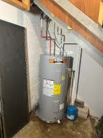
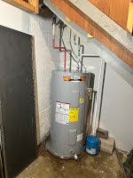
 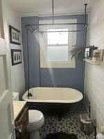
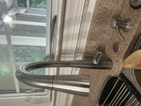
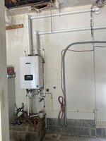
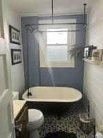
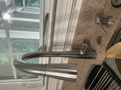
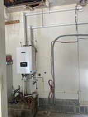
 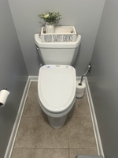
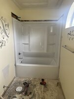
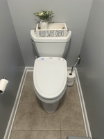
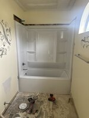
Complete Water Heater Service
We handle everything — from quick repairs to full replacements, tankless conversions, preventative maintenance, and emergency hot water restoration. Our certified technicians come prepared to diagnose and fix the problem the same day when possible.
We fix…
- Hot water not working or insufficient hot water
- Leaking tank or fittings
- Noisy or rumbling heater (sediment buildup)
- Faulty thermostats, heating elements, or thermocouples
- Frequent on/off cycling or pilot light issues
- Tankless water heater service & installation
- Water heater replacement & safe disposal
When to repair vs. replace
Repair is usually best for single-component failures (heating element, thermostat, valve) on newer units. Replace is recommended for tanks leaking, severe corrosion, repeated breakdowns, or units older than 10–12 years.
Expert Drain Cleaning Services
From simple sink clogs to backed-up sewer lines, we have the equipment and expertise to clear your drains quickly and safely. Our licensed plumbers use professional tools to restore flow and prevent future problems.
We clear…
- Kitchen sink & garbage disposal clogs
- Bathroom sink, tub, and shower drains
- Toilet blockages & sewer backups
- Floor drains & laundry drains
- Main sewer line obstructions
- Tree root intrusion in sewer pipes
- Grease buildup and recurring clogs
Advanced methods
- Video camera inspections to locate blockages
- Power snaking & augers for tough clogs
- High-pressure hydro jetting for deep cleaning
- Preventive maintenance programs
Frequently Asked Questions
- Do you offer emergency same-day water heater repair?
- Yes — call 757-401-4296. We prioritize leaks and no-hot-water calls and will dispatch a technician quickly.
- How long does a water heater replacement take?
- Most replacements are completed in 3–6 hours depending on unit type, venting, and any necessary plumbing or gas work.
- Can I convert from a tank to a tankless system?
- Yes. Conversions may require gas line upgrades or electrical changes; we provide full estimates and code-compliant installations.
- Do you offer warranties?
- Yes — we provide manufacturer warranties on new units and a service warranty on labor. Warranty details are included in your written estimate.
Frequently Asked Questions
- Do you provide emergency drain cleaning?
- Yes — call 757-401-4296. We respond quickly to emergency clogs, sewer backups, and overflows.
- What if the problem keeps coming back?
- We offer video camera inspections to identify root causes like tree roots, collapsed pipes, or grease buildup so we can fix it permanently.
- Do you offer maintenance plans?
- Yes — we provide preventive drain cleaning and inspections to keep your drains running smoothly year-round.